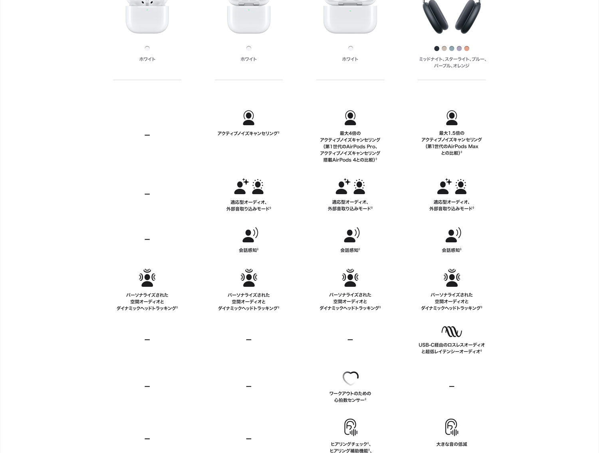
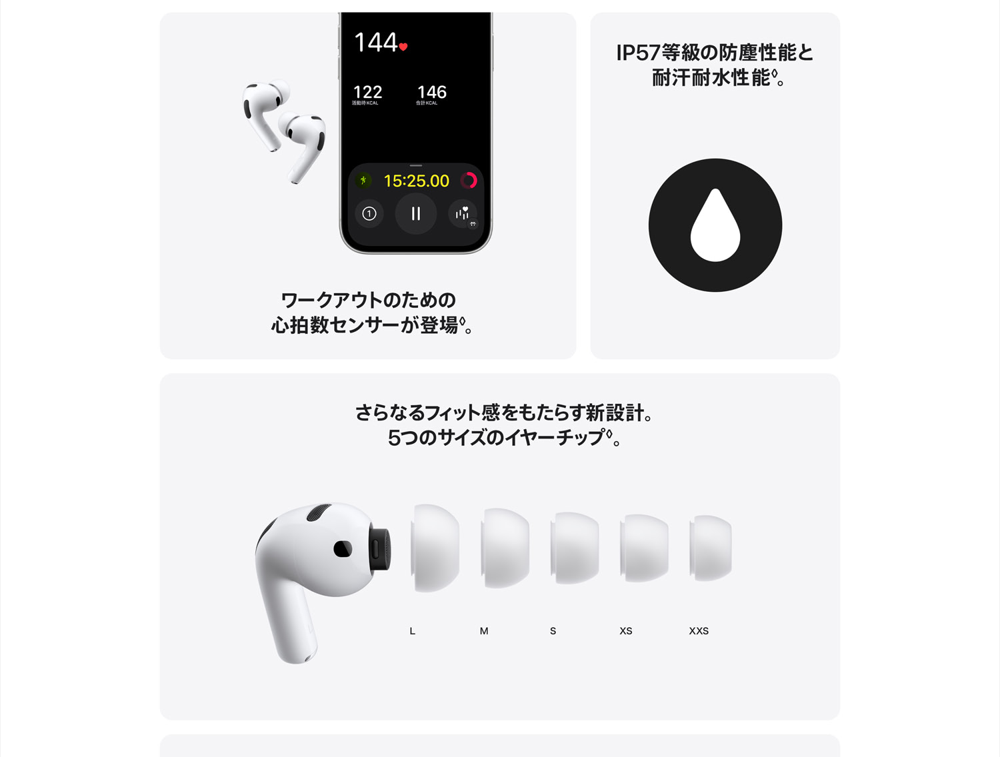

4万円近いイヤホンは、バイト代で買うにはかなり思い切りが要ります。AirPods Pro 3（型番MFHP4J/A）はApple公式で42,800円。Amazonでは36,800円前後で買えるタイミングもありますが、それでも学生にとっては安い買い物ではありません。Pro 2から何が変わったのか、Androidでも元が取れるのかが気になるところです。
値段に見合うかどうかは、音質より毎日使う部分で決まると考えます。電車内のノイズキャンセリング、周りの声を聞く外部音取り込み、連続で使える時間などです。この記事では公式スペックとAirPods Pro 2との違いを整理し、あわせて家族に使ってもらって分かったことも書いておきます。
主要スペック
| 型番 | MFHP4J/A |
|---|---|
| 参考価格 | 42,800円→36,800円（Amazon・税込・変動あり／Apple公式42,800円） |
| タイプ | 完全ワイヤレスイヤホン（カナル型） |
| チップ | Apple H2 |
| ノイズキャンセリング | アクティブノイズキャンセリング（Appleは第1世代AirPods Pro比で最大4倍と案内） |
| 外部音取り込み | 対応（適応型オーディオ・会話感知あり） |
| バッテリー | イヤホン単体で最大8時間（ノイズキャンセリング オン）／ケース込みで最大24時間 |
| 防塵・耐汗耐水 | IP57（イヤホン・ケースとも） |
| 心拍数センサー | 搭載（ワークアウト用） |
| イヤーチップ | XXS・XS・S・M・Lの5サイズ |
| 重量 | イヤホン片側5.55g／ケース43.99g |
| 充電 | USB-C、MagSafe充電器、Qi規格のワイヤレス充電器、Apple Watch充電器（USB-Cケーブルは別売） |
| Bluetooth | 5.3 |
| カラー | ホワイト |
AirPods Pro 3とPro 2の違い
Apple公式の仕様をもとに、AirPods Pro 2（第2世代）との主な違いを並べました。Pro 2はUSB-C版と比べています。チップはどちらもH2で、充電端子もどちらもUSB-Cです。
| 項目 | AirPods Pro 3 | AirPods Pro 2 |
|---|---|---|
| イヤホン単体の再生時間 | 最大8時間 | 最大6時間 |
| ケース込みの合計 | 最大24時間 | 最大30時間 |
| 防塵・耐汗耐水 | IP57 | IP54 |
| イヤーチップ | 5サイズ（XXS〜L） | 4サイズ（XS〜L） |
| 心拍数センサー | あり | なし |
| ノイズキャンセリング（Apple表記） | 第1世代AirPods Pro比で最大4倍 | 第1世代AirPods Pro比で最大2倍 |

イヤホン単体の再生時間は6時間から8時間に伸びました。一方で、ケースで充電しながら使った場合の合計は30時間から24時間に減っています。1回の連続再生ではPro 3が有利です。ケースを含めた合計時間はPro 2のほうが長いので、外出先でケースの充電が切れやすい人は判断材料にしてください。
発表時に話題になったライブ翻訳は、ファームウェア更新でPro 2でも使えるようになっています。日本語に対応したのはiOS 26.1からで、Apple Intelligenceに対応したiPhoneが必要です。翻訳だけを目当てにPro 2から買い替える理由にはなりにくいでしょう。
Pro 2がまだ問題なく使えているなら、急いで買い替える必要は薄いと考えます。第1世代のAirPods Proや、ノイズキャンセリングなしのイヤホンから乗り換えるなら、静かさの違いを感じやすいと考えます。
装着感・バッテリー・心拍数測定

装着感：イヤーチップにXXSが加わった
イヤーチップはXXS・XS・S・M・Lの5サイズです。Pro 2の4サイズにXXSが加わったので、耳が小さくてPro 2がフィットしなかった人には選択肢が増えました。イヤホンの重さは片側5.55gです。合う・合わないは耳の形で変わるので、気になるなら店頭で試してから買うのが確実です。
バッテリー：通学の往復なら余裕がある
ノイズキャンセリングをオンにして、イヤホン単体で最大8時間再生できます。片道1時間の通学なら、往復2時間使っても約6時間分残る計算です。ケースで5分充電すると約1時間再生できるので、朝に充電し忘れても、ケースに残量があれば家を出る前の数分で片道分はまかなえます。
心拍数測定とIP57：運動にも使える
イヤホンに心拍数センサーが入り、ワークアウト中の心拍数をiPhoneで記録できます。医療機器ではないので、運動中の目安として使う機能です。Apple Watchを持っていなくても運動の記録を取りたい人には便利です。防塵・耐汗耐水はIP57なので、汗をかく運動や小雨の日の通学でも使いやすい仕様です。ただし水泳など水中での使用には対応していません。
Androidでも使える？
Bluetoothイヤホンなので、Androidスマホにもつないで音楽を聴けます。ただAppleは、他社製のデバイスでは機能が制限される場合があると案内しています。心拍数の記録、ライブ翻訳、Apple製品間の自動切り替えといった機能は、iPhoneなどのApple製品と組み合わせる前提です。
Androidをメインで使っているなら、Pro 3の強みを活かしにくい面があります。iPhoneユーザーかどうかが、買うかどうかの大きな分かれ目です。
家族に使ってもらって分かった3つのこと
1. 外部音取り込みが、耳の遠くなった家族の会話補助になった
一番びっくりしたのがこれです。父は最近テレビの音量が上がったり、こちらの声を聞き返したりが増えていました。外部音取り込みモードで使ってもらったら「周りの声がはっきり聞こえる」と、本人がすっかり気に入っています。取り込んだ音が不自然に増幅されず、地続きに聞こえるのがいいみたいです。
もちろんこれは補聴器ではなく、外の音を拾って聞きやすくするイヤホンの機能です。聞こえに不安があるなら専門家に相談するのが前提。それでも、家族が自然に使えている光景は予想外の収穫でした。
2. ノイズキャンセリングが効きすぎて、外では「気づかない」怖さがある
ノイズキャンセリングは、正直効きすぎなくらいよく効きます。電車の走行音も街のざわつきもスッと消えて、静かな空間が手に入る。集中したいときや移動中は最高です。
問題はその静けさの裏側。ホームで音楽を聴いていると、電車が入ってきたことにすら気づきません。踏切や車の接近音も同じ。屋外ではオフにするか、外部音取り込みに切り替えてください。この一手間を省くと危ない場面があります。
3. 音質は、もう語らなくていい安定感
肝心の音は期待どおり。低音は締まって量感もあり、ボーカルや高域の抜けもいい。ジャンルを選ばず気持ちよく鳴らしてくれます。音質で不満を感じる場面は、まずないでしょう。
裏を返せば、音質はもう語る必要がない水準に達している、ということ。だから買う決め手は音そのものより、外部音取り込みやノイズキャンセリング、Apple製品とのつながりやすさといった「体験ぜんぶ」のほうにあります。
学生向けのお得情報
Amazonで買うなら、学生向けのPrime Studentの内容も確認しておくとよいでしょう。特典の内容や条件は時期によって変わるので、最新情報は公式ページで確かめてください。
学生なら、まずはPrime Studentをチェック。
Prime Student（旧Amazon Student）を見てみる※学生確認の上、登録は無料です。詳細条件はPrime Studentのページでご確認ください。
購入前に知っておきたいこと
- 屋外ではノイズキャンセリングの使い分けが必須。
遮音性能が高く、電車や車の接近音にも気づきにくい。交通量のある場所では外部音取り込みに切り替えるなど、意識した使い方が必要。 - ケース込みの再生時間はPro 2より短い。
イヤホン単体は最大8時間に伸びたが、ケース込みの合計は最大24時間でPro 2の30時間より短い。 - USB-Cケーブルは別売り。
充電用のケーブルは付属しない。手持ちのUSB-Cケーブルかワイヤレス充電器を使う前提になる。 - 補聴器の代わりにはならない。
外部音取り込みは会話の聞き取りを助けてくれるが、医療機器ではない。聞こえに本格的な不安がある場合は専門家への相談が前提。 - 持ち味を活かすにはiPhoneとの組み合わせが前提。
心拍数の記録やライブ翻訳、デバイスの自動切り替えはApple製品との連携で使える機能。Androidでも音楽は聴けるが、機能は限られる。
総評
AirPods Pro 3は、iPhoneを使っている学生なら買って後悔しにくい一台だと考えます。単体8時間のバッテリーと強いノイズキャンセリングは電車での通学や自習で役立ちますし、外部音取り込みは家族が会話の聞き取りに使えるほど自然でした。Pro 2から急いで乗り換える必要はありませんが、初めてノイズキャンセリング付きのイヤホンを買うなら、Amazonで36,800円前後のタイミングを狙う価値はあります。